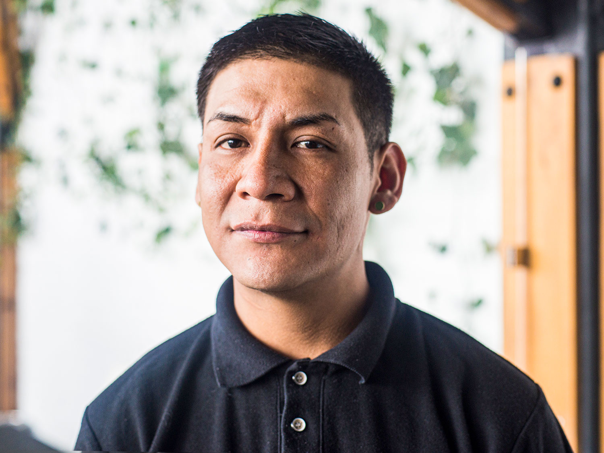

Anne: I just want to thank you, first of all, for coming to talk to us,
because I'm sure it's not easy.
Miguel: Definitely, yeah.
Anne: And talking about experiences that bring back pain and friendships.
I'm very sorry. But it's great that you're going to do it. It's important
to hear those.
Miguel: Of course. Thank you.
Anne: Why don't we start by you just telling me a little bit about what it
was like when you first came to the States.
Miguel: What I remember is you know living in a two -bedroom apartment with
my family, which was at that time, my dad, my stepmom, my aunt and uncle,
my cousin, my other aunt and uncle and my two boy cousins. So it was quite
a few of us in a two bedroom apartment. We used to, our room was the living
room. I remember living in the apartment and my dad used to put both the
couches together and make it bigger. And my stepmom and myself would sleep
on the couches, and my dad would sleep on the side of us.
Miguel: I remember going to school, actually school wasn't that bad when we
lived in California, because we had the opportunity that our teachers spoke
English and Spanish. So they kinda knew that kids that were coming in that
didn't speak English. And they would try to help us out a little bit more
with that. And it was great. It was really great living there at the
beginning.
Miguel: I remember that school. I remember McDonald's a lot. Eating
McDonald's when we're younger, they actually were able to take us to
Disneyland as well. A few years later, they took us to Disneyland. This is
in California, after the earthquake, there was an earthquake and we had to
move. And that's when we migrated to Portland, Oregon.
Anne: So when you said they took us to Disneyland, us meaning you and your
siblings?
Miguel: Right. It was actually my whole family that migrated from Mexico to
the United States, which was my two uncles, which are my dad's brothers and
my two aunts, which are my uncles' wives, two boy cousins and a girl
cousin. We all went together to Disneyland, my mom and myself and my dad.
And it was great. It was a lot of fun. We went to Universal Studios. Then I
remember during that time, there was still the King Kong train where they
took us, the ET thing where we were on the bikes. I had a lot of great
memories from when I was younger there.
Anne: That seems really, how old were you when you went to Disneyland?
Miguel: I think we were about eight years old. And I remember that during
that time I remember we were like big fans of the Pogs, the little things
that you play with like the Slammers. Yeah I know that. A big fan of
Batman, I've always been a big fan of Batman and I loved being there when I
was younger, I had a good childhood when I was in California. And then the
earthquake came, I think it was around 1994-95 there was a big earthquake
out there in California. And after that, things started going a little bit
downhill because my parents were without a job. But what they did was they
gathered a lot of cardboard like recycle. They recycled a lot of things.
And that was like their main source of income, was going out in the
mornings and getting cardboard boxes, plastic bottles, beer bottles,
aluminum cans, glass bottles and recycling.
Miguel: So that was what they started to do after the earthquake, because
before the earthquake they actually worked for a painting company. So their
job was stable, they had an income every week and things like that. But
after that, it was really hard for them to get a job. My uncle left from
California to Oregon. And when he got to Oregon, he was able to find work.
So he contacted my dad, and my other uncle, one of my other uncles decided
to come back to Mexico because he couldn't find you know a better way. He
got so desperate of, he just got frustrated and just said, "You know what,
I'm going to leave." And he did.
Miguel: He took my cousin and my aunt and came back to Mexico. So he's here
now. But the other, the rest of us stayed over there. And we lived in
Oregon, the rest of the time in Portland, Oregon and there, I went to
school, I went to elementary school in grade elementary school, I loved it.
It’s called the Ventura Park Elementary School. It was great. A lot of
great teachers. I remember one teacher in particular, Miss Gilmore, she was
always like, even when I went to middle school, she was always there. I
would run into her even in the streets, and it was really rare to run into
one of your teachers. But when I did, and she would see me, and she would
get really happy. And she would always tell me, "You're a great leader,
you're very smart, use that for something good, you know?" And I always had
that in mind. And that was pretty much always my intention, I don't know if
I started going off a little bit off track during middle school
Miguel: I think the people I started meeting there, they had older brothers
and older siblings that they knew more about, maybe drugs, gangs, weapons,
and things like that. So my curiosity brought me to try to see what that
was about. I didn't get involved in gangs too much, but being Hispanic, I
think that was kind of part of our culture, you can say. Not to be in the
gang, but to have a family member or know somebody that's in one and things
like that. Drugs wasn't really a big issue for me, I didn't have a drug
addiction to the point where I needed help or anything like that.
Miguel: I did occasionally consume marijuana and alcohol. But it wasn't
never really something that I enjoyed doing like that. I actually like
sports. I was in wrestling, and soccer, always soccer but I was more into
wrestling. And so I did wrestling. I have a picture of my trophy here in
Mexico. And I have my picture here.
Anne: It’s hard.
Miguel: I have a lot of things here. I enjoy working on cars. My very first
car was a Chrysler. And I remember installing a stereo. I remember washing
my car. Things like that, that I wish I had here. But it's a lot harder
here.
Anne: Did you have a lot of friends?
Miguel: Oh, yeah, definitely. I still have contact with friends that I was
in elementary school with. I have this particular friend; her name is
Cassandra. And she's always been my friend since I was in sixth grade. She
knows I'm out here. And she always sends me messages. They offered to help
with money and things like that, because they understand the situation out
here. And they understand the things I'm used to. Honestly, I was used to a
lot of good things out there and I was working and going to school. I was
able to buy myself things that I liked. And I can say it was affordable.
And out here it's hard, for example, to buy a pair of tennis shoes for 3000
Pesos and over there buying ‘em for $60 or $50. It was hard. Being here was
very difficult because I was so used to having a car. I had a permit to
drive. I was able to drive, I paid my insurance and I was always making
sure that I was safe, you know, if anything happened to us.
Miguel: Never really… I like fast cars but never really into illegal street
racing or anything like that. But out there in Portland, they had a
racetrack so I was able to go out there and see people race their cars and
things like that. I like technology. It seems like I want to study, I want
a career. I want to work in something that involves technology because
Mexico doesn't really have much technology and they don't really make much
of anything. And it would be somethin’ great, to be able to be in a country
and do somethin’ with their water system as well. I hear a lot of people
are left without water, it's very frustrating when you want to get up, take
a shower and there's no water, there's no electricity or there's no gas.
And that's the kinda things I don't like going through out here. And out
there, I was living in a one-bedroom apartment with hot water with, you
know, electricity. You pay your light bill, you're going to have
electricity, you pay everything.
Miguel: But out here, it's just like everybody is. I don't know, they don't
pay their electricity bills out here. So they just like hang off of other
people's light. And sometimes they find out, the next thing you know,
you're without electricity. Like, right now, we suffer from that. Our
lights get cut off a lot. Our water goes away a lot, too. And it's very
frustrating, because it's something that I'm not used to. I'm not saying
that I had the best life. But I lived comfortable. I wasn't rich, and I
wasn't wealthy, either. I was just being responsible and working and
getting my moneys, getting what I was working for. And that was a thing.
And out here's like, I think the more you work out here as well, the less
you make.
Miguel: A lot of construction jobs, I was 14, and it was an under the table
job remodeling houses. And the guy I worked for, he was like, "You're
really young." That was during the summer. So I was like, "It's just a
summer job." He was like, "Alright, I might hire you." And he was paying me
$10 an hour. And he was buying me food. And he was like taking me places,
he was really nice, really nice people. And they were actually very very
concerned about my legal status as well in the States. They were those type
of people that if they could help me they would. And unfortunately, I lost
contact with them because they left to Virginia. And I was in Oregon. And I
know if I would have been able to contact one of them, they would have been
able to help me with maybe a bond or something to pay the bail. But, they
were really good people and I wasn't doing much because of the fact that I
spoke English and Spanish.
Miguel: His name was Dennis. Dennis would be like, "Okay, you're going to
help me at this job site, because these people don't speak English." He's
like, "And I don't even think they speak Spanish, they speak a different
dialect." So when I get there, only one of them speak Spanish. So I had to
communicate with him, for him to communicate with the rest. So that was
always like my strengths too, being bilingual. And learning things. I'm a
visual learner. And I learned a lot of things in a lot of ways, but I can
like just see you do something and I can learn it.
Miguel: And that really helped me a lot with my work. I worked at a truck
wash. It was great. I loved it. I loved working with the people there. My
manager. He was great. He was half Hispanic, his mom was Hispanic and
established from the States. He was great. He was type of a person like, "I
need $20 for gas, can you," "No, here you go." And that's what I miss from
over there. At one point, I worked at a call center for spring. And I
remember, the reason I started working there was because my cousins were
working there.
Miguel: But I remember when people would do something out of the ordinary,
like, provide, say a certain word to a customer, provide a customer a
certain help, they would price you. They would give you a price. Maybe a
hands free headset or cell phone cover. And it's something that I don't see
out here. And it's something that is motivation. It would motivate me a
lot. When I used to work at the truck wash, my schedule was from 7:00 to
3:00 in the afternoon. My days off were different. It could be Wednesday
and Thursday and it could be Friday and Saturday.
Miguel: However, there was times where they needed people to cover other
shifts. And they would ask everybody, nobody would want to but I had a car.
So I was like well I can make it home, I have food. There's Jack in the
Box. I can get two tacos for $1. I'll be good on food. So I was like
alright, and I will go ahead and stand up. Let me go ahead and take that
graveyard shift. I'll stay from 11:00 to 7:00.
Miguel: I did that. I actually went in on a Sunday from 11:00 to 7:00,
thinking that was how the shift started. But no, I was supposed to come in
Monday from 11:00 to 7:00. But I worked a day more. So I worked Sunday
Monday and they gave me the weekends off. So after all this, they bring
doughnuts, they brought Krispy Kreme Doughnuts that day I remember, and
they shared a box with me. And they gave me some gift cards for gas and
some gift cards for Walmart to thank me for helping them out during that
graveyard shift. They didn't have anybody. And that was always me, like I
was always motivated to do better and to do more.
Miguel: I took the opportunity as well to not necessarily supervise
because, supervising would be constantly on people. But my duty at one
point in time when I wasn’t washing trucks was to greet the customer. And I
had that skill. So I was like, "Hey, good afternoon. How are you doing?"
"I'm doing great." "Oh You need to quit smoking." And I'm like, "Oh sorry.
Yeah," because we're outside so I could smoke. But I would smoke, joke
around with them, build a bond, and they would get so confident with us
that next trip, they would come back, "Hey, where is the little guy, the
little guy Miguel." And I was like, "Yeah, I'm right here." They're like,
"Hey, how have you been?" "Hey, remember I told you, I was going to go to
such place and bring back such thing." And I was like, "Yeah, hey here you
go."
Miguel: I had great communication skills with those people. That was
always, like trying to smile and be happy. My son's mother, her whole
family, they're American. And her grandpa was, I'm not going to say racist,
but he was a little prejudiced. So he would say some comments about
Hispanics and Black people. And he would always call me Pancho. He was
like, "Pancho,” and I would be like “whaat like yo...hey my name is
Miguel," and he was like, "I'm just going to call you Pancho. All y'all
look alike and things like that." And I was like, "All right." I would joke
around with them as well. And it got to a point where me and him would
like, he was a truck driver. So that's how I knew about my job, because he
helped me get in there.
Miguel: So he would go in and wash his truck, come out and joke around and
everybody and start building more confidence with me, he was a great
person. His name was Wayne. And me and him used to get along great. And his
wife, [inaudible], which is my son's mom's grandma. They're like she is my
grandma. My mother in law, she was great. Pam, she was a great person. I
really miss them a lot. And he used to take me on his truck. Like, "hey,
I'm going to go to California on a trip. You want to ride with me?" Like,
"Heck yeah, I want to ride with you." He had a nice Volvo. It's called,
it’s a Volvo 770. Nice truck. And I used to enjoy going with him and I
learned a lot, their culture as well.
Miguel: Maybe yeah Thanksgiving and things we would celebrate. But I've
never celebrated Thanksgiving with an American family. Just with my family
and maybe we do things differently than they do. And being able to go with
their family, he even bought an RV and we drove down to his son's house and
his family and his mother-in-law and their family. And I mean you can
imagine they had a big house, a great house and I was like the only colored
person there. And nobody treated me differently. Everybody was like, "Hey
man, go ahead and eat, and you want a beer?” And you have the crazy uncle
here like, "hey, come over here, do you know any pretty girls?" I was just
like, "Oh, I might.
Miguel: Getting to communicate with them, how do you say it… getting to
hang out with them and do more with their family was like actually helped
me a lot as well learn the culture a little bit more than how it is but it
was great. Fourth of July days were like let's go buy fireworks let's go to
Vancouver and buy tons of fireworks and go back to Portland and light them
up, illegal fireworks and barbecues. Like my family, literally my mom my
dad my uncles my brothers. My family was starting to get involved more too
with her family. They were starting to meet each other.
Miguel: My mother in law was like, "Oh my god, what should I make to eat?"
I was like, "Make to eat what you always make." And she would look at me
like, "Are you sure?" I'm like, "They're going to love your food." And she
would make her things and my family would come and eat. "Oh my god these
little carrots or baby red potatoes," and things like that. They would be
something I love it. I got used to eating that food and it was great. I
actually got sick when I got here for three months and I actually got broke
out in a rash everywhere because of the food because of the water. But her
family, she had an aunt named Jody and we used to go visit her and her kids
were mixed, they were African American and mixed and her whole family
treated me good and you know just honestly I did suffer a little bit of
racism. Just a little bit, but not to the point where I can tell you my
whole life I was discriminated.
Miguel: You know, I actually was treated a lot better than I was here. And
I enjoyed it. I miss her family. Unfortunately, her grandma passed away
last year. My baby's mom's grandma, she passed away last year. And she has
a brother with autism. And he misses me a lot too. I'll speak with him
through Facebook. And he'll be like, "When are you coming Miguel?" I was
like, "Not anytime soon." He has ADD. So he actually tried to catch our
house on fire a couple of times. And I talked to him. And it was weird,
because it seemed like I tried to talk to him in a way not like they did. I
would talk to him differently. And he would stay calm. He would go in my
room. He was a child, he didn't care. He didn't knock, he’d just open the
door.
Miguel: And we would regularly we're in there laying down or watching TV,
like, "Can I play Xbox with you?" "Sure, come in, turn it on." And he would
get frustrated. And he would throw the remote. And I would be like "Leave
him," his sister would cuss him out and say all kinds of things. I was
like, just calm down, she's like “he’s going to break the controller.” I'm
like, "I know, but just chill. I'll talk to him." And he would and he
really did change. And I'm not even going to like, he would take his
medication, his Adderall and things like that. But there was moments where
I would be like, "Don't take it, Let's go play basketball," and I would get
him really tired. And that would work, or listen to music or let's watch a
movie or let's wrestle. Things like that. And it would be different.
Miguel: She had a little sister that she was always with us. The little
girl was three years old. And she was always with us. We had a car, put her
in a car seat, drive her out. "Let's go eat." I’d get off from work like I
said, from seven to three. And I'd get home, take a shower, get dressed and
everyday we would go out to Outback Steakhouse to Shari’'s chicken fried
steak. I miss that. But-
Anne: And you had your own baby too?
Miguel: Yeah, he wasn't born yet. He wasn’t born yet. He was born in
December. But within after that time, I was already incarcerated so I
wasn't able to really─
Anne: Tell me what happened.
Miguel: The reason why I wasn't able to stay was because we went out to one
of my friends' birthday party. And it wasn't a big birthday party. It was
just like a dinner with his family at his house, zero alcohol. And after
that, we went outside and we did start drinking after a while. It got a
little bit late. And then we ended up having to leave, and during that time
my brother was with me and my brother, we went to 7-Eleven. And he ran into
some guys. And these guys start talking, asking my brother some questions.
And I wasn't sure what. So I got out the car and I was like, "What's going
on?" And the other guy is like, "Where are you from? The gang banging
thing.” And I looked at him like, "Bro, what you want?"
Miguel: I wasn't involved in gangs like that. But I wasn't scared of them.
And I was more of like a type of person that would like to have money. So I
was like, "You don't you don't scare me with this," so one of them hits my
brother. And he hits my brother, I hit the other guy. And there was three
of them and two girls. So I started getting in a fight with one and the
third one comes out and hits me and knocks me down. That's when my friend
and my girlfriend, and at that time she was pregnant, she gets out. The
girl, the other girl gets out, my friend gets out and he starts fighting
with one of them. So I get up and I go to the car and I used to play pool.
So I had my pool stick with me. So I open up the case and I pull up the
stick. And when I see the guy going towards my brother again, I hit him
with the pool stick. So when I hit him, I knock him down.
Miguel: That's when pretty much everything started happening because
obviously blood started coming out of his head and people started getting
freaked out. So everybody starts yelling. I didn't leave because I was
like, "Alright, well we're going to see what happens. Obviously, there's
cameras and they're going to see how everything happened, unfortunately, in
the cameras the only thing that you can see is me hitting the guy. So in
Oregon, they have this law called Measure 11, where it's a mandatory 16
months for any assault charge. And I was getting three assault charges for
each individual. And I had no self-defense rights or anything like that. We
explained… I had witnesses, letting them know what happened and they had
witnesses saying the other part. But the witnesses that were with them,
were pretty much saying that they confronted us when we got to the parking
lot in the car, they confronted us getting out of the car. And that's
exactly what happened.
Miguel: I think the judge noticed as well, that after so many court
hearings, these people didn't appear. They no longer went, but to one court
hearing. And if you see these people and you see me, you're going to be
like alright, "What are they so scared of?" These guys were covered in
tattoos. They were way older than me at that time. I mean I think one of
them was 35 and I was like 19. The judge is looking at him, he looked at
me, and I think that's what also made him change his mind because I was
going for at like least six years for an assault charge.
Miguel: And when he took all this into consideration, he saw them, and he
really pretty much said, "Okay, well it doesn't seem like they're just
people out there not causing trouble, right?. They're looking for it." So I
think that's why he decided a year and a day. But then again, it was also
to send me to a state Prison, which that stays on your record, which did
affect me in my immigration status. If it would have been a misdemeanor, I
still could have been able to bail out in immigration, but with the felony,
I didn't have an opportunity, not even for voluntary departure, nothing
like that. That kinda made me more, it did stress me out a lot. It did
cause a lot of different emotions within me. To the point where I was so
easy to access knives, things like that, in that institution. Where I mean,
I was like, should I just end it now or should I…
Miguel: I'm not that type of person. I'm not very weak, to the point where
I would consider that. But it did get to a point where I was really just
done with a lot. My dreams, I like music. I like to rap, I like to sing.
And something that I was doing out there as well. You know, It's so easy to
get a hold of a laptop and a microphone and do things formally. And out
here, it's impossible. And I've done some music out here. And it's hard to
do anything with it without any money, without knowing anybody. And out
there, I had a lot of friends out there that, "Hey, let's go to your house.
And we can record and we can do this."
Miguel: I had a friend that his father was a police officer. And he would
always invite me to his house and his dad would always invite me to dinner.
I loved his mom's lasagna. We used to eat too. They were great people. And
they knew I was Hispanic, and they never treated me differently. And his
dad was like, "Dude, you guys should rap in English and Spanish," and gave
us ideas. And we would. I remember when we started, he got his laptop, he
recorded some songs and burnt them on a CD. And we had that CD going around
school when we were in middle school and high school. It was something that
was my dream. It was like I can maybe grow to be something or somebody out
here. All those dreams, all those ideas, all those great thoughts, all
those great ideas and great plans that you had get taken away from you like
literally, like in days. You don't have those hopes anymore. You're out
here, you lose all hope. I did. I mean I’m alone out here pretty much.
Miguel: I mean I have my dad's sister and my dad's brother, but they're not
very, I can’t count on them for things. I've struggled a lot. And right now
I'm without a phone, because I had to pawn my cell phone because I had to
pay my rent. I work and I get paid, it's just that it's really hard. I used
to live in a different state here. And I was paying 60 pesos every day just
for bus fare, getting to work and back and forth. And that was if I was
lucky to get a bus that would take me halfway to my house. But then again,
you have to pay like 30 pesos more for it. That's what was getting to me.
And right now I'm struggling a little bit with my rent. I just started
working here in April. In Tele Tech, and it's, I'm barely getting there.
And like I said, my family, I'd rather be struggling on my own than with
them because they live in an area where there's a lot of drug sale, a lot
of bad things. On my dad's side, and my cousins they've stolen from me.
Miguel: Yeah. And I don't even feel safe with my own family. So that's why
I tend to stay on my own. Like be on my own, if I eat, good, If I don't,
that's okay as well. At least I know it's because of me and not because
someone else caused it. But I'm trying my best right now to get back on my
feet because I lost a lot of things last year, in November. I got stabbed.
They took all my stuff. I had a laptop. I lost that. That's pretty much
what I had to go through to be able to be on my own to be free again, you
know just be like, "Alright, you guys can rob me and do what you can, you
know, but at least I'll be okay." And, yeah, that happened last year. And
since then I still haven't really been able to recover. And I mean
opportunities like this really does help me. Even if it's a little bit, at
least I know, I have this money to go eat something right now and make it
back home.
Miguel: But I mean there's a lot of things that are hard right now because
of the situation. And I think maybe too, because I don't get my mind off of
being in the States. It's like, you need to just take that idea away.
You're not over there. I'm like, "I know." But it's like, "Why can’t it be?
Why can’t I be as happy as I was over there? Why can't it be the same? I'm
doing good things as well here, I'm working, I'm not getting into trouble.
I'm not doing anything illegal. Why doesn't it pay off?" But it don't. It
seems like the more you want, the less you get, and the less things are.
It's hard, it really is. And I don't complain a lot about it because I
don't get anything out of it. I don't get nowhere. But it is so-
Miguel: Yeah, it is difficult though. It really is. You're in that mind.
Like I'm 31 and I don't feel old, and I don't feel young. I feel like I'm
at a point where I need to hurry up and do something though. And it's
really hard to hurry up and do something out here when there's very little
for us to do. And you don't have very many opportunities. I would love to
have my own house out here and pay a mortgage and have a car payment and
have my son come home and be like, "Dad, I love our car” or “dad, our house
looks nice” or “dad you got a good job," or things like that. And it's
impossible to really see that, to really visualize what I had over there.
Even where I live, people are like, "Oh, you live in a nice area." I'm
like, "I do live in a nice area, but my house is not nice." It's like it
might look nice and everything but where I live is not really, and they're
like “oh” you know. But it is hard. It really is. It's really difficult,
it's frustrating, it's very stressful.
Miguel: I want to do more than just work. And I would like to, not own a
big business but own a little store or something. But it's hard. And
especially now, I think about it like I'm 31 will be 32 by the time I'm 40,
I try to focus more in the future and it's hard because then you're like,
"Okay, but I got the path following me, I got to catch up and I got to
focus now and so," but I try. I really do try and that helps me a lot
talking to people and especially people that come from the States, like we
have a lot in common, just like the language itself helps us a lot.
Anne: When you think about your own identity, do you think of yourself as a
Mexican? As an American?
Miguel: Oh no as Mexican, as Hispanic. But I think I'm more Americanized.
That's the thing, that I got more used to the culture out there, their
customs and things like that. But I think like yeah I’m Hispanic, I'm
Mexican, but I'm a little bit more Americanized and I have, you know I'm
more used to the things from over there. Like, I think I could get along
better with people out there than over here. Really it's for a lot of
reasons but yeah, I would consider myself more from over there than from
over here. But like they say you're not even from there, you're not even
from here, you're like in the between. But yeah.
Anne: In terms of you said you know you had dreams when you were in the US.
What about dreams now? What are your dreams now?
Miguel: I would love to go back. That's my main dream. Like going back, I
can focus on working, saving money. I know people out there and not
necessarily in big music industries or anything like that, but I know
people out there that could possibly help me better that part of music. I
like music, I like working on cars and everything that has to do with a
car, like the motor, paint, interior, stereo, anything. I like things like
that. So I feel like I have a greater opportunity in regards to education
out there for me to be able to accomplish that.
Miguel: I feel like I would have the tools that I would need, the resources
that I would need out there to become a better person and become a
successful person than out here. Out here is like you're limited. And if
you are better than someone, they try to pull you down from there. So it's
like “oh this guy's too good, let's not have him here.” It's like jealousy
and things like that. Favoritism, a lot of favoritism goeson in places like
this. I try to get along with everybody, and there’s a lot of people out
here like “man he's a homosexual.” Like so?
Miguel: At the end of the day it doesn't bother you, you know? I have a
brother and sister here. They're gay. They're half-brothers. But I don't
have anything against them. Even when they approached me and told me this,
they're like "Oh, that's okay with you?" I'm like, "Yeah, dude, I’m like,
don't feel that, I'm going to be like, "Get away from me." And like, no.
And they're like, "Because we thought that, that's how you were going to
react because of how you are." I'm like, "How am I?" And they're like,
"Because we don't know," I'm like, "Okay, then." So they thought I was
going to respond or react to it, like, "You're homosexual. You're not my
brother," because one of my uncles reacted like that.
Miguel: But I'm like, "No, dude, you're my brother, even more of a reason
to protect you." because I know a lot of people out there don't look at it
like, right. So I'm like, it's even more of a reason to protect you and
help you out. If anybody bothering you, anybody doing anything to you, let
me know. And they’re like “ok,” and they feel better now. And my uncle is
like, constantly like “beat him up, beat up your brother. Take the
homosexual out of him.” Like “Dude I’m gonna beat you up and take the
stupidity out of you, like, what's wrong with you, leave him alone.” But
like I said, I think I've suffered out here more like discrimination type
situations than I did in the States.
Miguel: Even to get a job, it was like super easy. And like, "Oh, you want
to work? Okay, great. You know come in and sign and fill this application
out, bring in your papers," and they would do drug testing, and everything
would be great. Next thing you know I’m already working. I was always the
type like, "You want to get a uniform now or you want to wait till you get
paid and make some more money?" Like, "No, order me a hoodie. And a couple
of these." And they're like, "Really?" I'm like, "Yeah, I want to be part
of that company already." And yeah, they would even half prices and things
like that, give you like hats. It was fun.
Miguel: Like barbecues, we'd have work gatherings, we'd go play baseball
and things like that. And it was fun. And out here like I can't do it. And
if you do go out to a gathering, there's always a problem for sure. At
least somebody gets in a fight. Somebody has some type of conflict with
somebody else and you're just like really, like we come out here to hang
out and have a good time and you're out here talking about this and that,
arguing with somebody? Like no. But I mean even women out here are a lot
different. Not to be like racist. But when I was in the States, I never
really dated a Hispanic girl. I was more into other girls, white girls or
African American girls, Asians, things like that. Because I always felt
like the Hispanic culture or the girls were more interested in other
things, like material things and money and being even out here it’s like
something I can't get used to out here. They know you speak English and
they're like, "You got a good job." Like, no, well I don’t know, and you
know and things like that. So that's another issue.
Miguel: It’s kinda hard. I think they're kinda violent too. Because of
that, they think we're violent, like they think, then they realize you're
not, and they realize you're like, "ohh this guy's not going to hit me,
this guy's not going to do what the other guy did." So they take advantage
of that. And they want to do something. Like I’m telling you this from an
experience I had with this girl. She was really wild. And I got to a point
where I had to go talk to her parents to tell her parents to take her back
because she was crazy. And they did and they told me "We know how she is."
And she's still around. But yeah, that's another thing I have problems
with.
Miguel: But other than that, I guess I try to do day to day and see what
comes up every day. I mean drug addiction out here, I feel bad because
there's no help, nobody to help really people that really do want it. It's
so sad. I have co-workers that they were here, that they're out here now.
They're homeless, and they don't work and they're addicted to
methamphetamines, which is something that's been growing out here. And you
never really heard of meth out here. Even though it's producedout here,
even though it's what it is out here, you didn't really hear people using
it. And it's getting to that point. I mean I can literally walk out there
and show you what's—. It’s sad because these people have good skills with
computers, they have, their English is fluent. They speak as good English
as anybody, any of us.
Miguel: They're responsible people, but they're out here now homeless. And
I mean, yes, some of them choose to, I understand. But some of them just
get here and they go to their family's house and their family takes
advantage of them and kicks them out. I mean kinda similar to what I went
through. But see, I was a little bit stronger and I didn't go to like the
drug part of it, homelessness. I actually went to where I rent now. And I
talked to the lady and I was like, "Look, I have nowhere to go. I have
1,000 Pesos, I know, your rent is more. But if you can wait for me." And
she was like, "Yeah, I'll wait for you." And I was so grateful for that.
And I moved in.
Miguel: I'm not caught up with everything, as I had upon my phone. But I
found my phone finished paying off the deposit. Soon as I'm paid off rent
and deposit already, now next time I get paid, I can get my phone out and
then just continue to be on top of my rent. I mean it’s okay, I don't mind
being without a phone. I mean, it's something that you need every day.
Believe me, I feel naked without my phone. It's like, "Where is it?" But,
it's necessary. It's things that I have to do out here and it's something
that I've learned, if you don't do something for yourself, no one's gonna
do nothing for you. And that's a lie sometimes that people like, "Oh in
Mexico if people they see you," No, people out here, if they see you,
they'll do even worse to you. They'll make you less; if you're already
down, they'll make you more.
Miguel: With my dad’s side of the family, they're like, "Oh, you think
you're better than us because you work at a call center and because you
speak English." I'm like, "No, I don't think I'm better than you." I’m
like, "You think I'm better. You're making yourself less than me. Because
you're making that comment and you're bringing that up. I don't think I'm
better. I just think that fortunately, I was able to go to school, I was
able to study, I was able to learn another language because I chose to."
I'm like, there's this people that go to the states and they don't learn
English and they've been there 30 years.
Miguel: That right there. That's bad. I'm like, not me. I'm doing something
with what I know. I'm like, "It's like you uncle, you know carpentry,
you're not going to go as an electrician. You're a carpenter, right?" "No,
but why you always got to bring this?" I'm like, "Because you guys are
always saying that I feel like I'm better than you. And it's not that I'm
better than you. It's just that I chose this. My cousins chose not to go to
school anymore. That's their decision. You pay their school, you pay for
them, you give them everything they want and need for nothing. They don't
do nothing. They didn't even finish middle school and you're sitting there
pretty much rewarding them for nothing."
Miguel: I'm like, "And you're busting your back every day and every night
and every weekend, and you come home to arguments, you come home to your
daughter's this." My cousin, she's their work and you know how they have a
sweet 16, but they're 15 here. My uncle was saving a lot of money for that,
like his vision of this was big. And she ended up getting pregnant at 14.
So I was like, "You see, what does it matter if you have material things?
You buy her shoes, you buy her clothes, you buy her everything, but you're
not there physically? You're not there to know what's going on. And look,
she's pregnant now." And he's like, "But how? She doesn't go out."
Miguel: Then I'm like, "That's the problem." I feel like, women out here
get abused, get hit. Women out here suffer a lot. Not just in the city, but
in other states. But then again, they talk about it on news, “oh we're
tired of men killing women,” but it's part of their culture. They've made
it their culture, because they feel like, “oh my husband beats me up, it's
normal. My husband cheats on me and beats me up, it's normal.” And it's
not, it's not normal, and it's not right. And they feel like they have to
be okay with it. Why? Because I see it in my family as well. I'm a man and
I don't like that. When a girl’s try to do something to me, I get mad, of
course, it makes me want to hit ‘em back, it makes me want to react in a
violent way, as well.
Miguel: But I think about it, and I was like, "I'm not going to be the one
that's going to feel good." I feel bad emotionally because if I were to hit
her, but they act like it's normal, they act like it's part of life, they
act like it's part of being a woman here in Mexico, getting hit, getting
cheated on, having to go through your husband or anybody being a drug
addict or an alcoholic, and it's okay for him to come home late. They look
at it like it's just okay. And I don't believe it's like that. I don't
believe women should go or men should go through it. Because I know, we can
go through abuse as well. Because I've experienced a little bit of it. And
it might not be physical. But it might be emotional. Because they might
emotionally abuse you, and they don't know that. There's a lot of things
that I hear that I wish I had the way of changing it.
Miguel: Not for money, not necessarily for money, but just to make the
people look at life differently. Like drug addiction, maybe just basically,
like walk in, sit down, maybe we can talk, maybe even talking to somebody
for five minutes can help them the whole day. And I tell you this, because
it helps me. I've experienced this type of feeling, I understand you, I
know how it feels not to have your wife or your son or your dad or your
mom, I can relate to it because I don't have none of that either here. And
it's hard, and a lot of people go to drugs or alcohol.
Miguel: I think that we got to show the youth, the younger people, even
people my age, or even people older than me, that don't, they don't know
that. But they've never had somebody tell them that, that you're better
than that, you're capable of more. And now they’re out here doing the
opposite and women as well. I know a couple girls that get hit and they're
still there. And I tell them, "If I can help you, if I can put you in a
house that's safe for you, I would."
Miguel: If I had the money and the resources to set something up where
people that really needed the help like, there's a house for women, for
abused woman where we can maybe help them out. With maybe some type of
daycare while they go to work if they have a job, or if I help them find
jobs or help them school, help them finish schools. People with drug
addictions as well, help them detox, help them go through things like that.
There's nothing like that out here that I know of. And I hate that because
you see a lot of good people go to waste and a lot of good people die and a
lot of women are dying or getting killed because of things like that,
because they don't have a shelter. Because they don't have nowhere to go.
And they blame cartels and they blame... Yeah, okay, but do they really
know what they do? Do they really know really who's the bad person here? Do
they really not see that the news and the government are the ones that are
that are causing this? ‘Cause the employers they don't really know exactly
why these women go through these things.
Miguel: Because there's women involved in cartels, there's women involved
in all kinds of things as well. And if we put it in the top part of the
government, it's just the government. Because if the government really
wanted to better their country, or their city, or their whatever, they
would do something like that. And they don't do nothing, they do the
opposite. Instead of helping, they put more drugs out there, they put more
people out there to do more bad. Their cops don't do nothing in reality,
they don't help nobody. When people really do need aid like they do the
least they can. Right?
Miguel: And when it has to do with something different, they're there. And
like I said, it's just part of the culture. It's just part of being
Mexican. It is part of living in Mexico. You have to deal with that. It's
not if you want to, it's not if your family is better, that's okay, but
there's 1000 more families that are worse. You know what I mean? It doesn't
help one person being different than the rest. And that's another struggle
out here, that you can't be good, because people take advantage of that. If
you're a good person, then it's happening.
Anne: Well I want to thank you for this. I've had a lot of insight. And I
think that you're still young.
Miguel: Yeah.
Anne: So I think you should... You're the same age as my son, so you have
some good years ahead, I'm sure.
Miguel: Definitely. Yeah...
<\p>

Miguel C
Mexico City, Mexico
Anne Preston
June 1, 2019
More pictures: